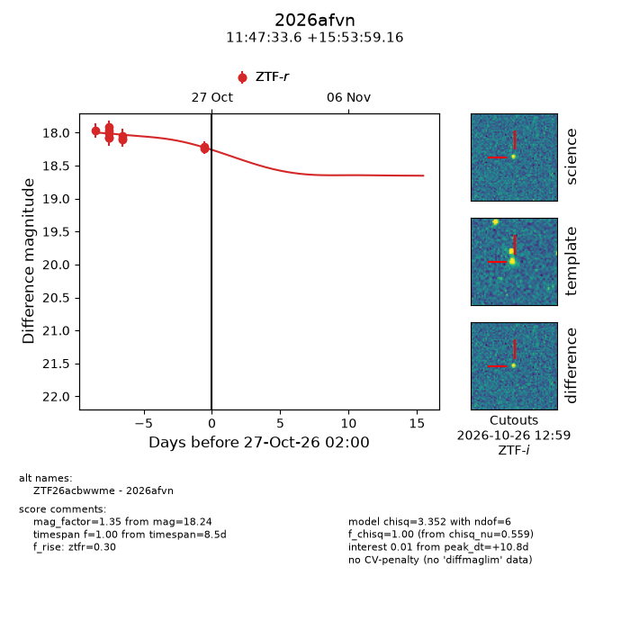
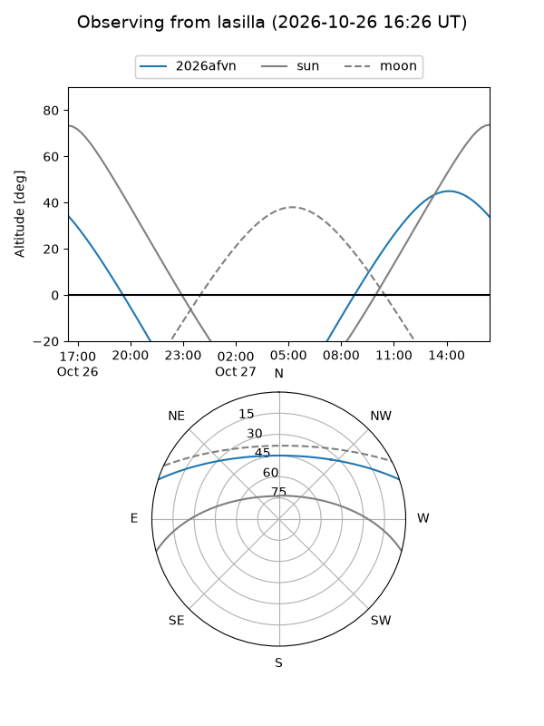
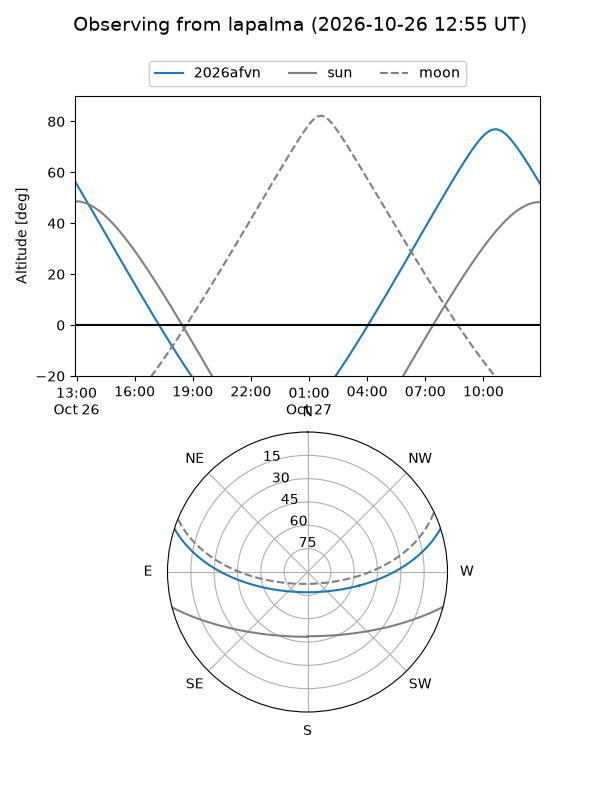
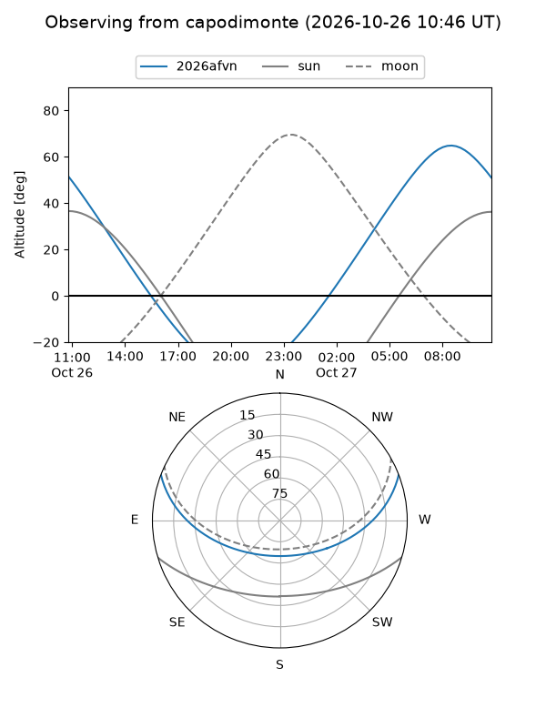
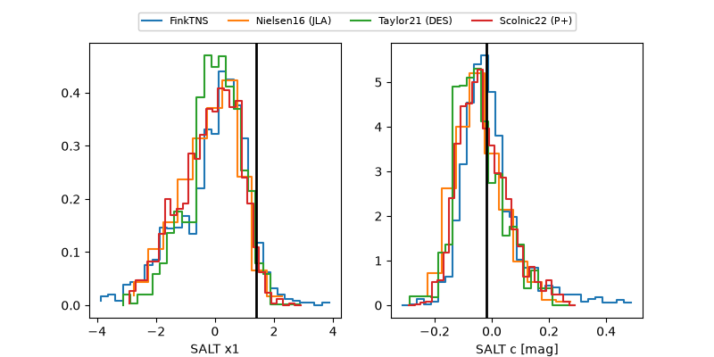

2026afvn
Target 2026afvn at 2026-10-27 13:57
Aliases and brokers:
FINK-ZTF: ztf.fink-portal.org/ZTF26acbwwme
Lasair-ZTF: lasair-ztf.lsst.ac.uk/objects/ZTF26acbwwme
ALeRCE-ZTF: alerce.online/object/ZTF26acbwwme
YSE-PZ: ziggy.ucolick.org/yse/transient_detail/2026afvn
TNS name: wis-tns.org/object/2026afvn
Direct TNS query: direct search
alt names
ZTF26acbwwme (ztf,fink_ztf)
2026afvn (tns,yse)
Coordinates:
equatorial (ra, dec) = 176.8899,+15.89977
equatorial (HMS+DMS) = 11:47:33.58,+15:53:59.16
galactic (l, b) = (246.8309,+71.41035)
Flags:
peak dt: +11.3
Photometry:
last ztfr=18.24
11 ztfr detections
Lightcurve

Visibility



Additional plots
